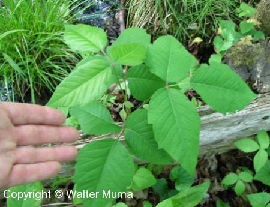
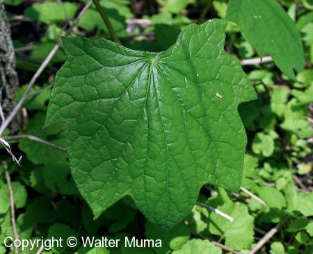
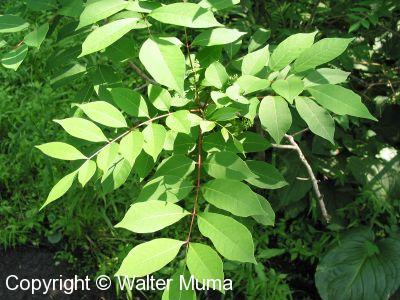

Poison Ivy
Main Identification Features
- A low shrub, a climbing vine, or a larger shrub.
- Compound leaf with 3 leaflets.
- Fruits are hard white berries, that persist on the plant through winter.
- Grows in Forests, open areas, rocky areas.
Poison Risk
- Poisonous to touch - causes a rash in many people.

Canada Moonseed
Main Identification Features
- Grows on a woody vine.
- The leaf stem attaches to the leaf just in from the leaf edge. This helps to distinguish Canada Moonseed from Grapes.
- Fruit resembles wild grapes, but are especially poisonous as well.
- Grows in fields and open areas.
Poison Risk
- Fruits are poisonous. They resemble those of wild grapes.

Poison Sumac
Main Identification Features
- Shrub, grows in wet areas
- Many compound leaflets, that turn brilliant red in autumn.
- Wet areas. This helps todistinguish it from other Sumacs.
Poison Risk
- Poisonous to touch. Causes a Poison Ivy-like rash.